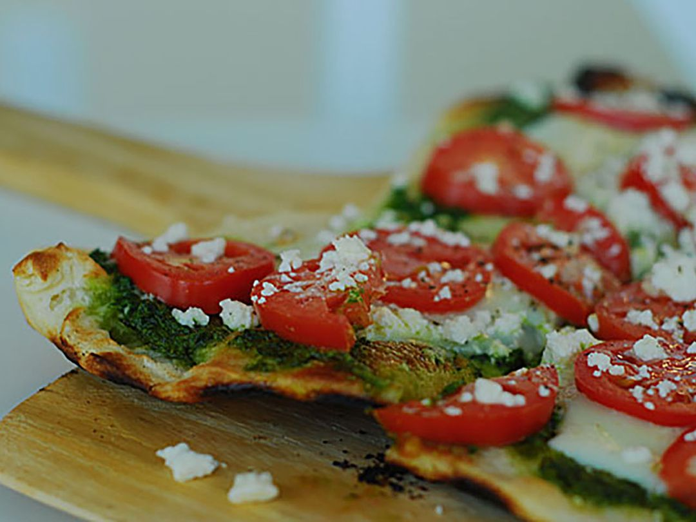

Pizza

Description:
The absolute perfect weeknight meal that comes together in minutes! Use leftover rotisserie chicken, fresh tomatoes, pesto and cheese!
Ingredients:
- 1 (12 inch) pre-baked pizza crust
- 1/2 cup pesto
- 1 ripe tomato, chopped
- 1/2 cup green bell pepper, chopped
- 1 (2 ounce) can chopped black olives, drained
- 1/2 small red onion, chopped
- 1 (4 ounce) artichoke hearts, drained and sliced
- 1 cup crumbled feta cheese
Steps
- Preheat the oven to 450 degrees F (230 degrees C).
- Spread pesto on pizza crust. Top with tomato, bell pepper, olives, red onion, artichoke hearts, and feta cheese.
- Bake in the preheated oven untl cheese is melted and browned, 8 to 10 minutes.